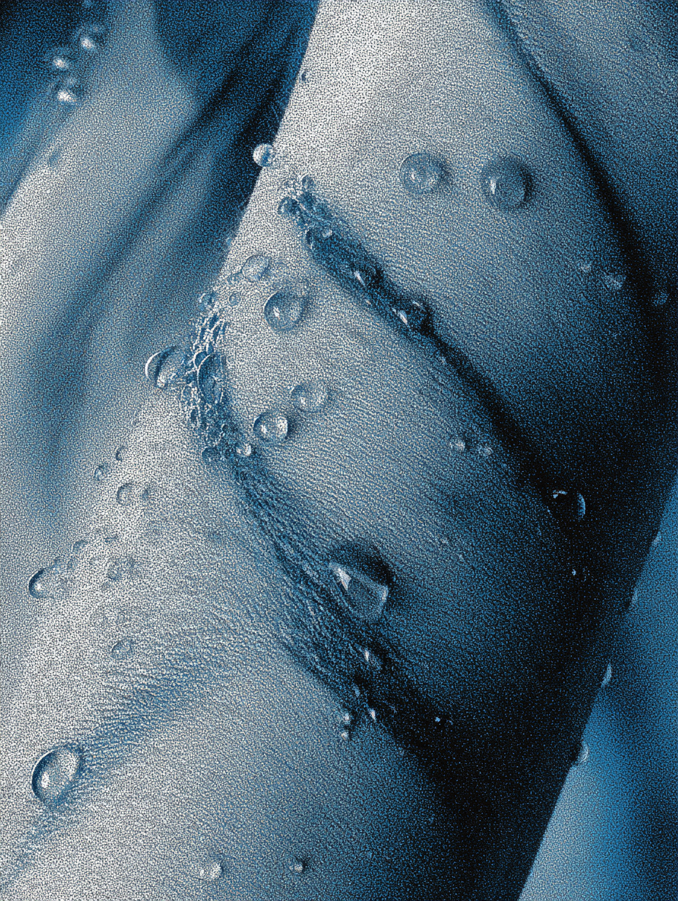
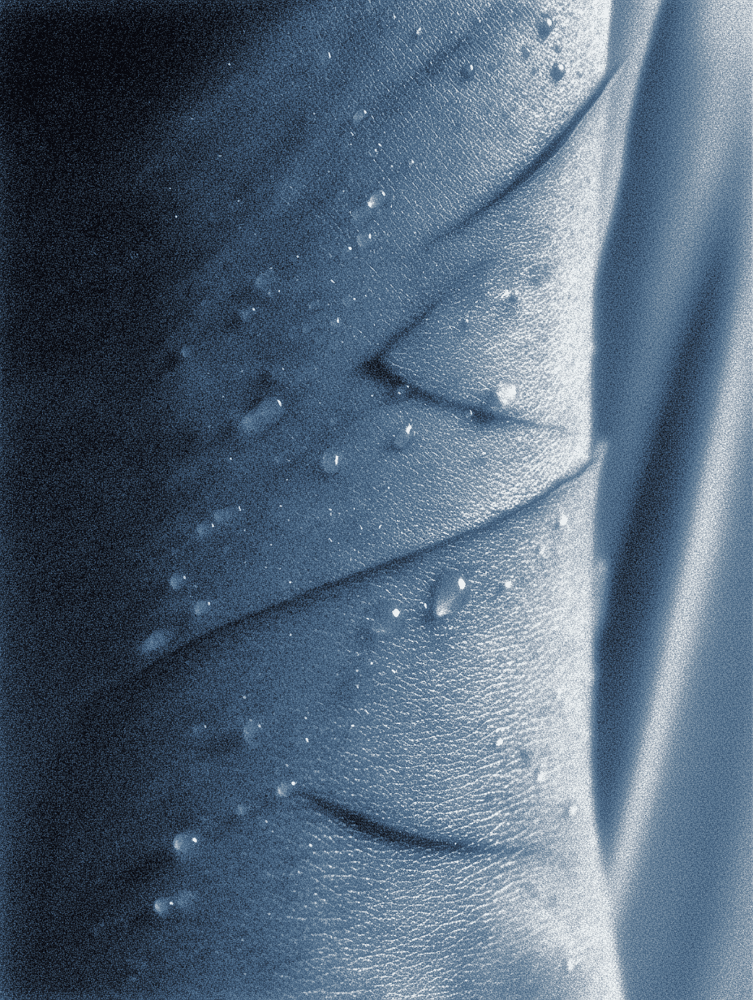
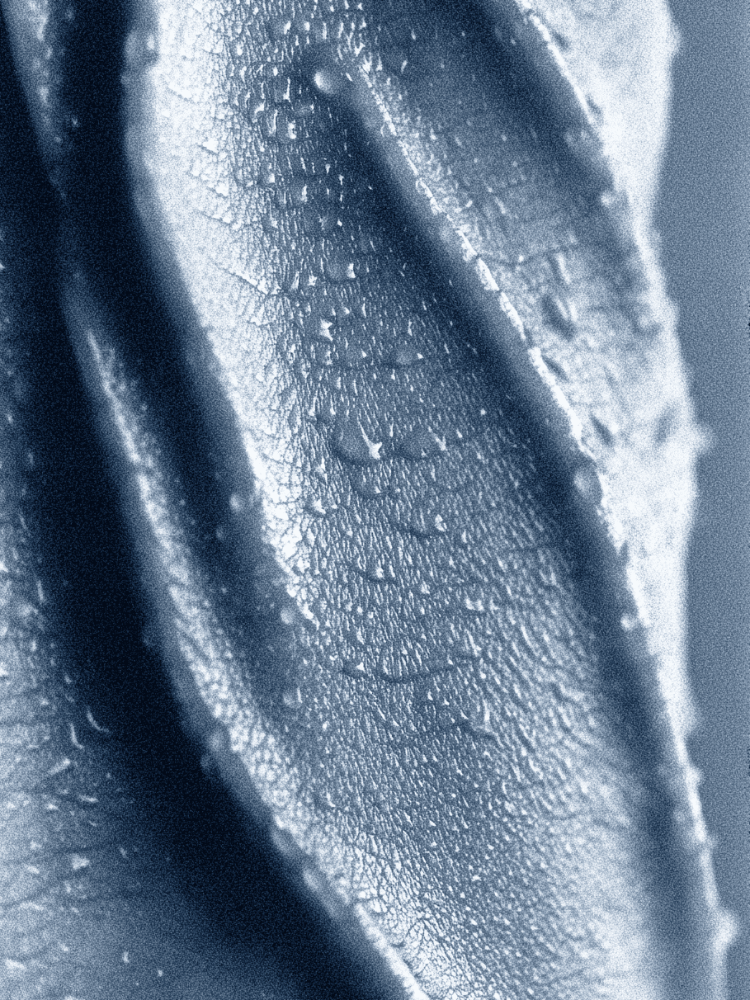
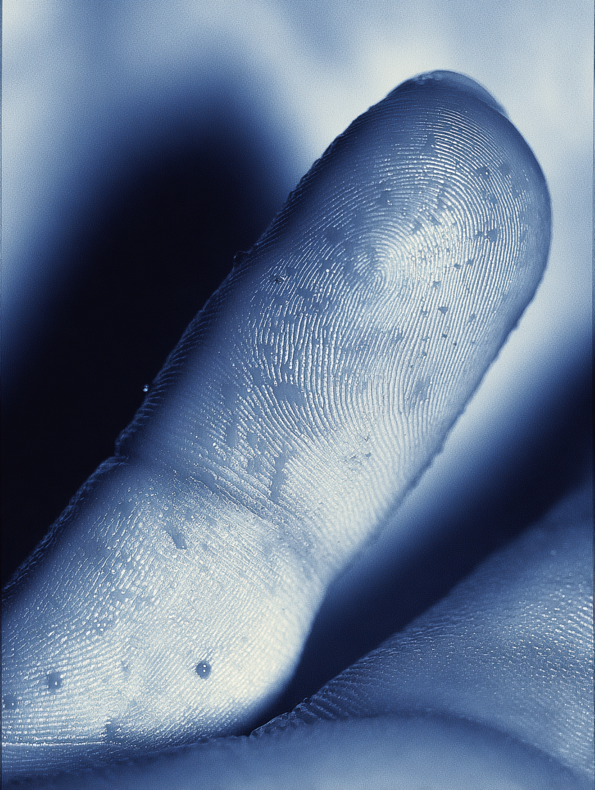
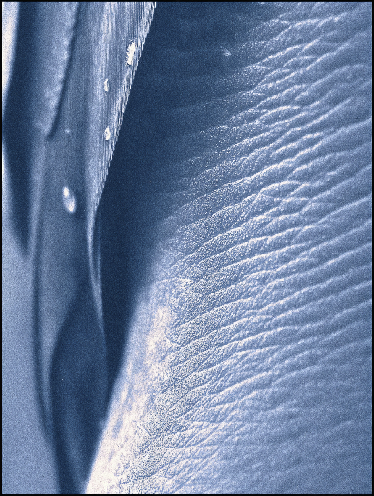
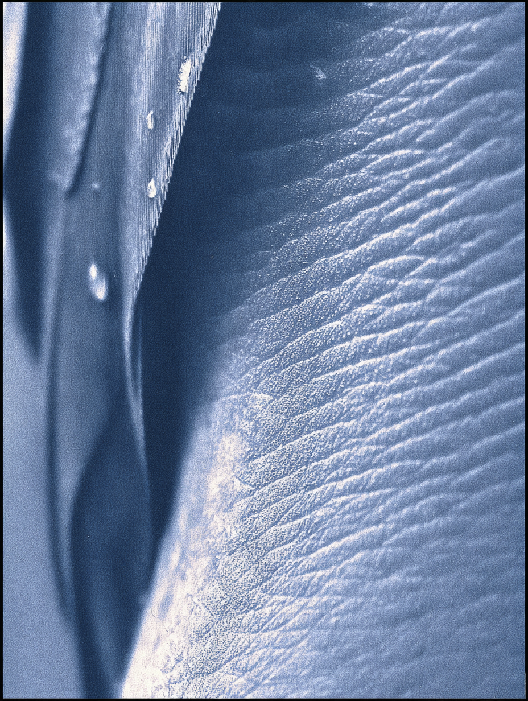
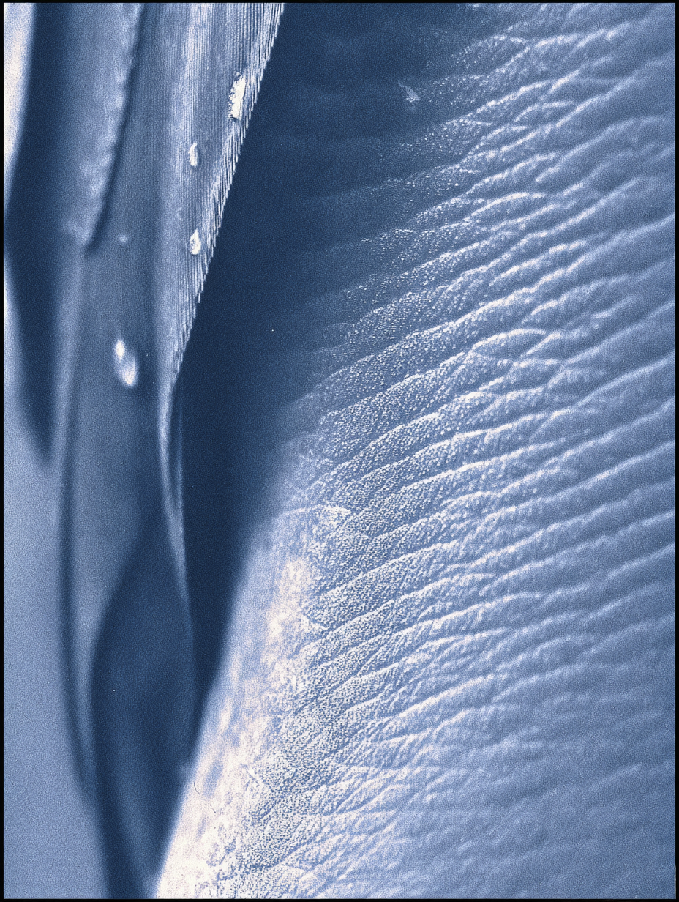

Figures
작품에 사용된 삽화와 시각 자료를 아카이브한 페이지로, 전체 작업에서 활용된 시각적 요소들을 한눈에 확인할 수 있도록 구성되었습니다.
Archives of illustrations and visual materials used in the work, and is designed to provide an overview of the visual elements employed throughout the project.





 

